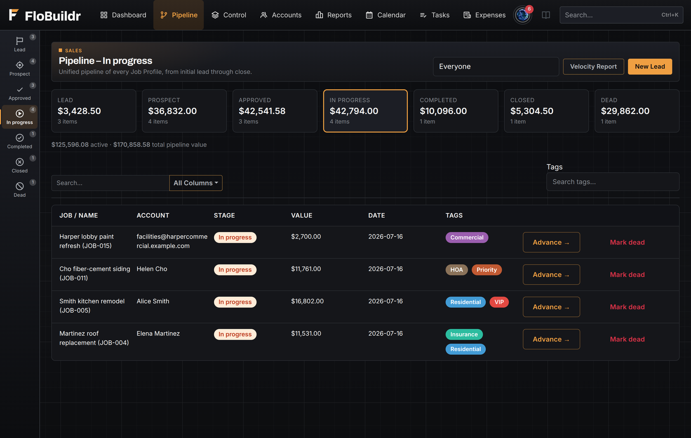
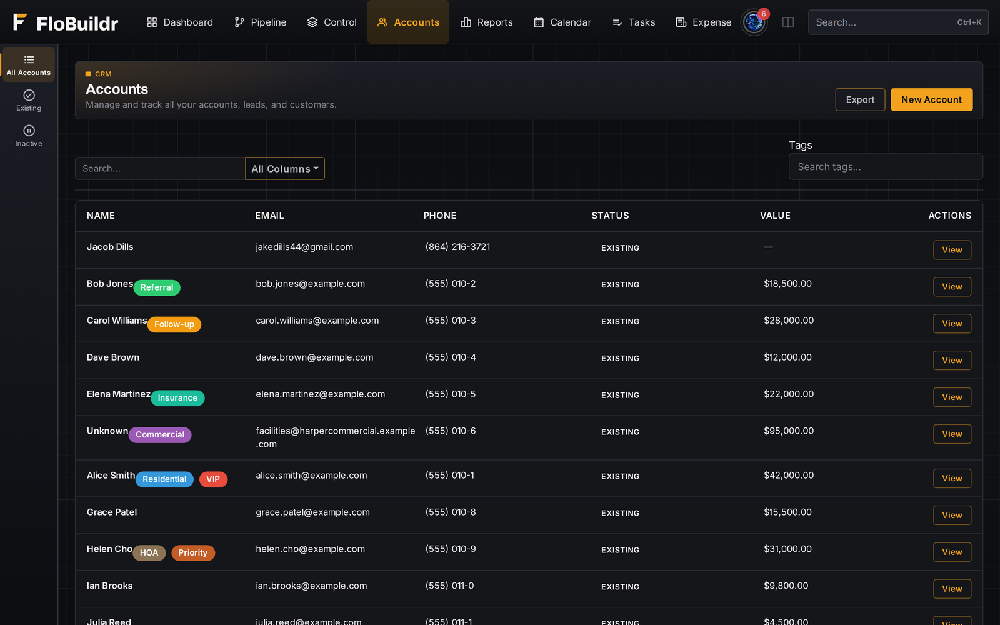
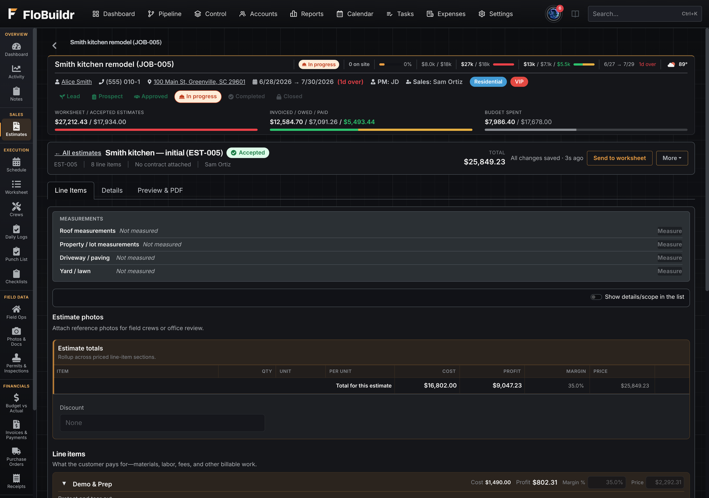
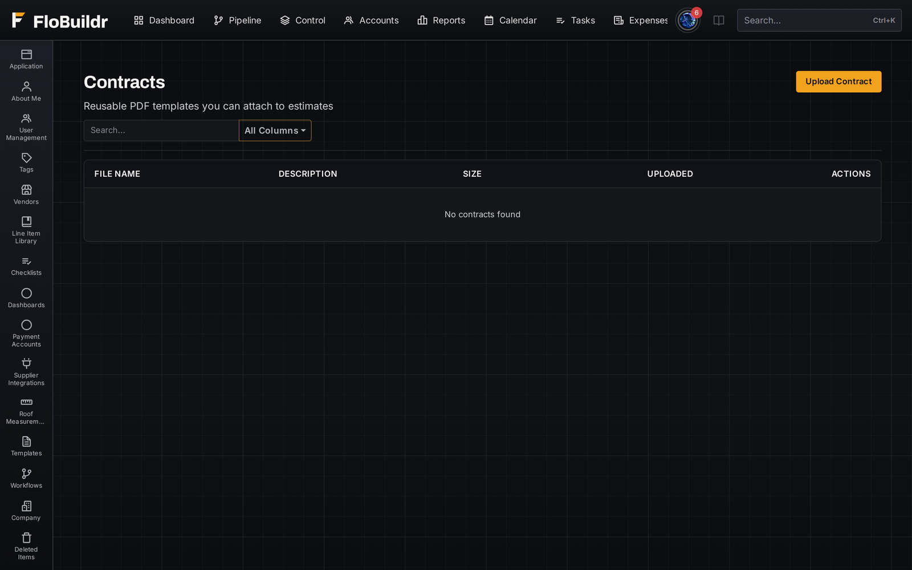
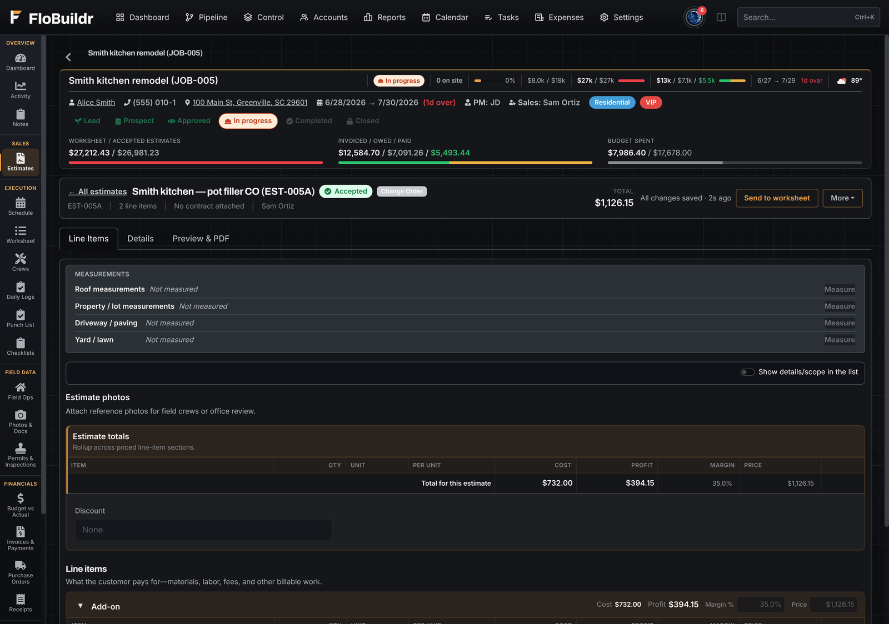

On the job
The bid starts where the work happens.
Measure from the satellite view, price from your supplier, send for signature. The estimate that wins becomes the plan you run.
FeaturesWin the work
Pipeline, accounts, estimates, contracts, and change orders, everything that turns a lead into an approved job lives on one record before production ever starts.
Every job moves through Lead → Prospect → Approved → In progress → Completed → Closed, with stage value rolling up so you always know active and total pipeline. Advance a job by hand, or let an accepted estimate move it for you, the stage reflects reality instead of a sales team's memory.

Customers, contacts, and properties live on the account, so the next estimate starts from real history instead of a blank CRM form. Multiple jobs at the same address or for the same homeowner stay connected, no re-entering the same contact three times a year.

Build from a line-item library with sections, markup, tax, and live distributor pricing, plus FloBuildr AI price assist working from regional benchmarks on real job data. Send a branded PDF for e-sign, and an accepted estimate auto-advances the job and pulls straight into the worksheet, production doesn't rebuild the bid from scratch.

Attach a contract template to any estimate and collect the signature in the same send. The signed copy lands on the job, the account, and the customer portal automatically, so nobody hunts through email for the executed PDF at closeout.

Mid-job scope doesn't need a parallel change-order system. Price the add-on, send it for signature, and pull it into the worksheet the same way you did the original bid, contract value and budget update together.

Trace the roof planes on satellite imagery, set the pitch for each one, and FloBuildr turns the flat outline into real roof area: footprint, roof area, roofing squares, and squares with your waste factor. Eave, ridge, hip, valley, and rake lines come with it. Measurements belong to the property, so you draw them once and every future job at that address starts with them.
On the estimate, a measurements panel drops those totals in as Measurement lines, and you link them to material and labor lines so quantities flow on their own. Re-applying updates the same lines instead of piling up duplicates.
A fast estimate, not a certified report. FloBuildr measures the footprint and converts it using the pitch you choose, so verify on site before ordering for a tight job. Certified auto-pitch reports are available from a connected provider.
On any material or equipment line, From supplier pulls a real time, account specific quote from your connected supplier. Pick the branch, search the catalog, apply the price, and the line is tagged with the supplier, branch, product, and the moment it was priced. That tag rides along when the estimate becomes the worksheet.
Branches are ordered nearest first for the job address, with yards you already have an account at lifted to the top, and your choice is remembered for that job. Apply a template built at another branch and FloBuildr shows you the price difference before you decide.
Auto-price with AI suggests unit prices for material and labor lines from regional benchmarks and your own pricing history, each with a confidence level. It is a starting point that gets you to a number fast.
Always review AI prices before you put them in front of a customer.
Also in this area
On the job
Measure from the satellite view, price from your supplier, send for signature. The estimate that wins becomes the plan you run.
Start free and run a real bid through pipeline, estimate, and e-sign on one Job Profile.
Start free trial Book a demoFree for 60 days. No credit card. Every feature on.